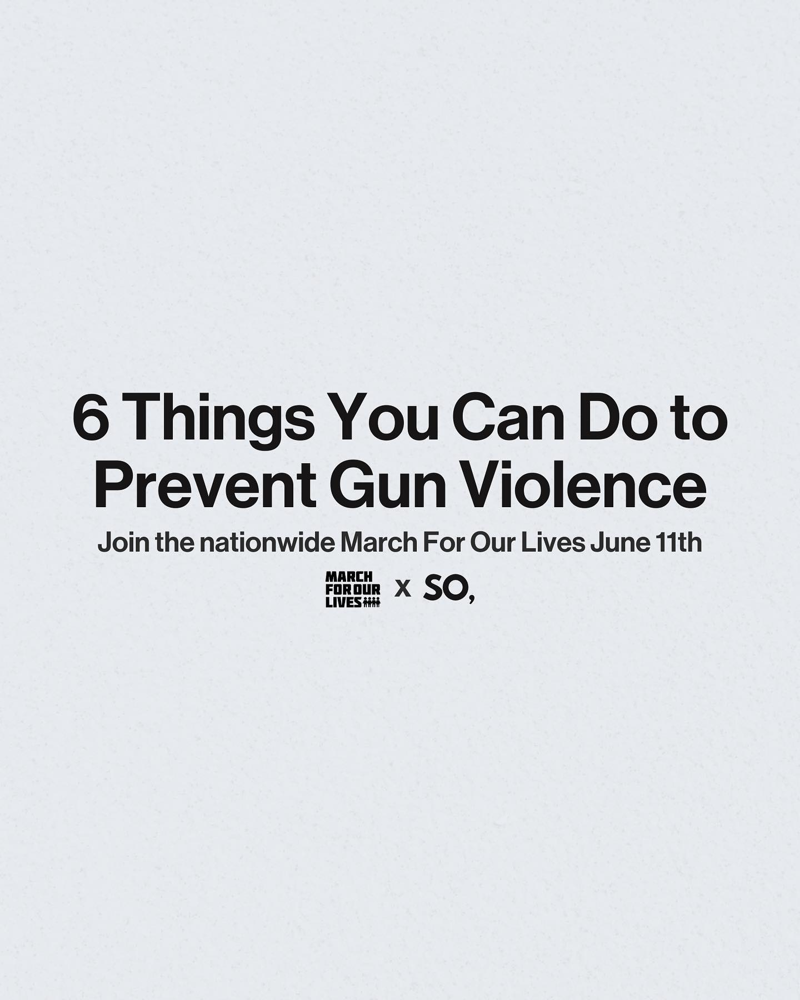
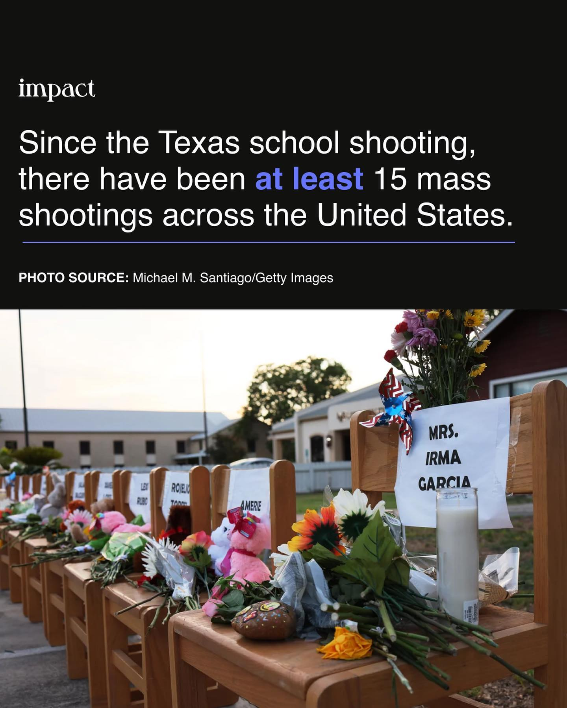
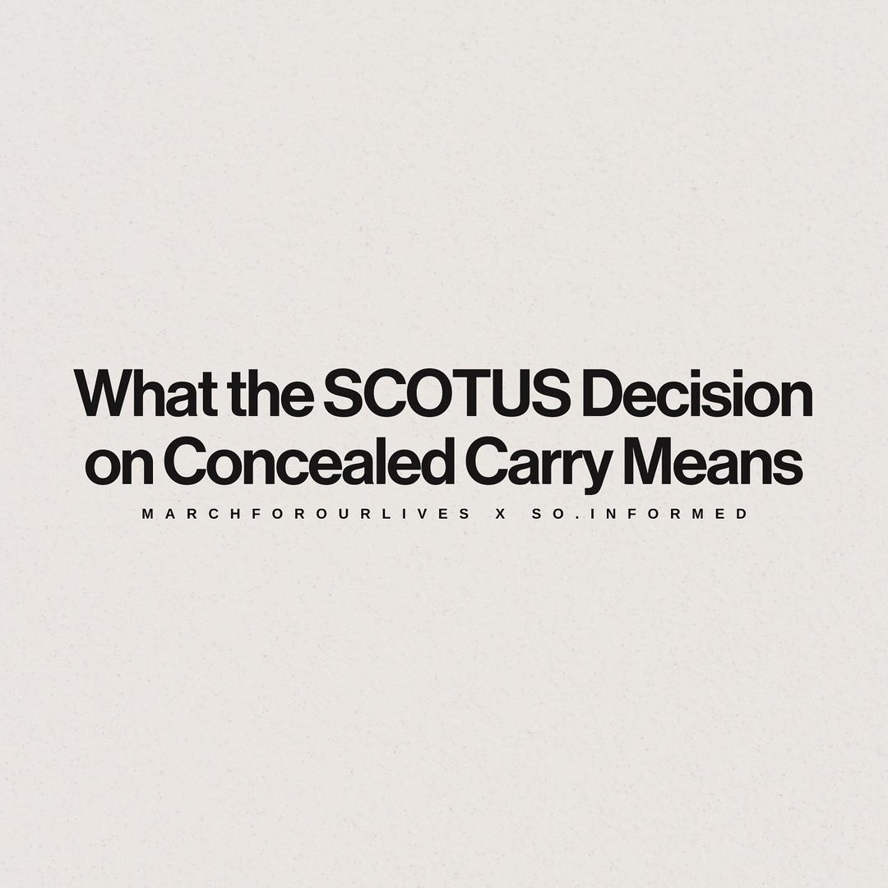
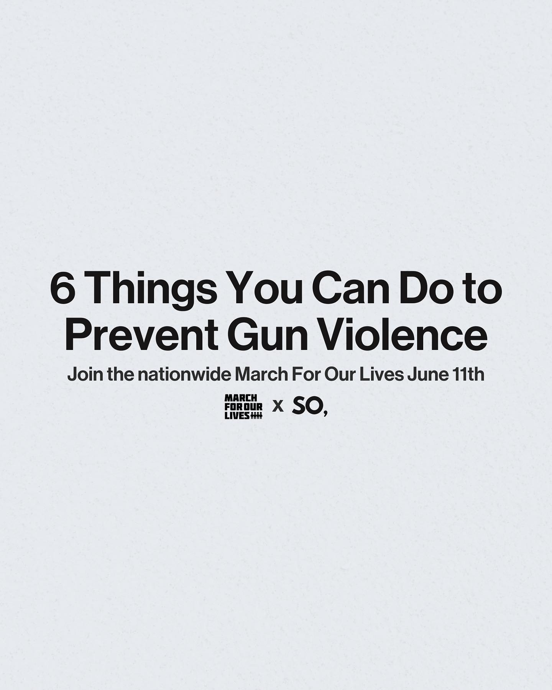
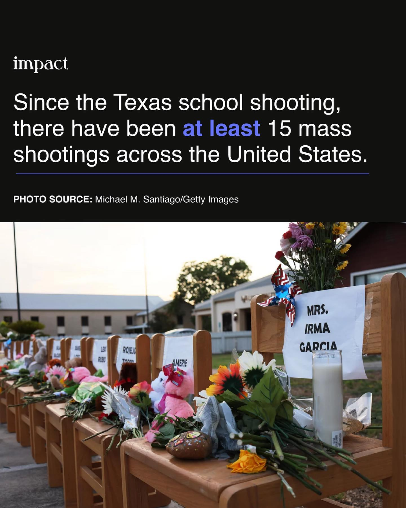
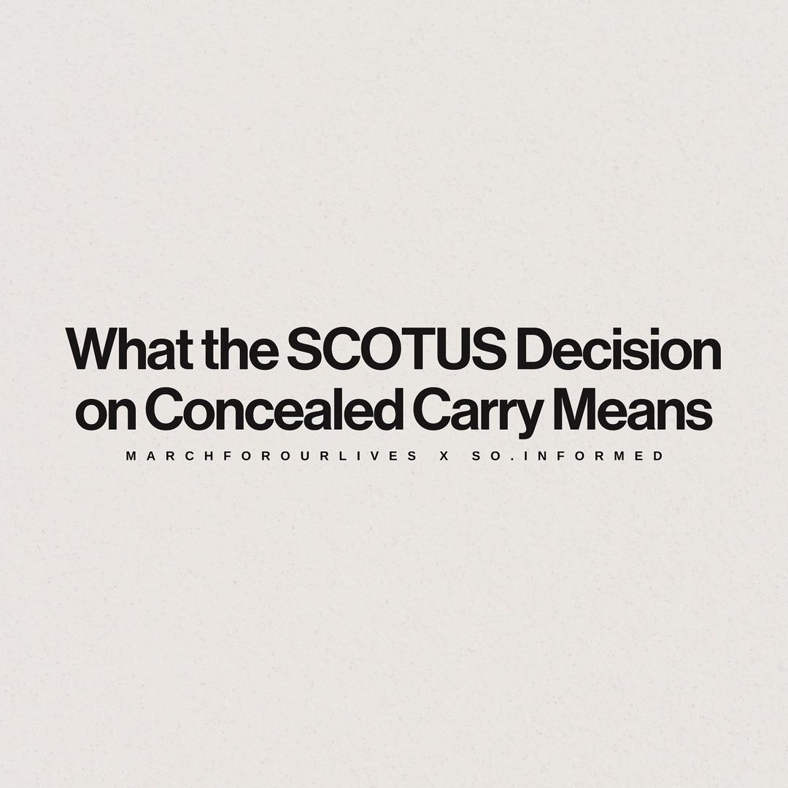

As of June 29, just three days ago, six mass shootings occurred in Winona, Texas, Paterson, New Jersey, Blakely, Georgia, San Antonio, Texas, and Tacoma, Washington. On May 24, the Uvalde shooting became the third deadliest school shooting. However, action is yet to be implemented.
These mass shootings have underlined the significance of action and better legislation restricting guns. One such policy that people are rooting for is the Age 21 Act. Introduced in 2019, the Age 21 Act would raise the minimum age to purchase a large capacity ammunition feeding device or semiautomatic assault weapon from 18 to 21 years of age. If the government enforced this act earlier, the Uvalde shooting and many other tragic shootings would not have occurred.
Moreover, many hope that the US will follow in the footsteps of Canada by enforcing thorough background checks and other steps to ensure guns are only getting in the right hands from now on. Not only that, Canada recently proposed C-21, which places a "freeze" on the sale, purchase, or transfer of handguns in Canada, except for a limited set of individuals and businesses, without banning their use and is moving forward with its firearm buy-back program, setting a good example for the US.
Pushing the US government to recognize the need for gun control and implement actions similar to Canada, many activists have participated in more than 400 marches organized by March For Our Lives in early June. However, unfortunately, the issue of gun control has only been becoming huger, as the Supreme Court's recent decision on concealed carry allows for those who own a gun to bear it in public. Therefore, we must work together./p>
Below are links to support March For Our Lives and resources to help you advocate for gun control!